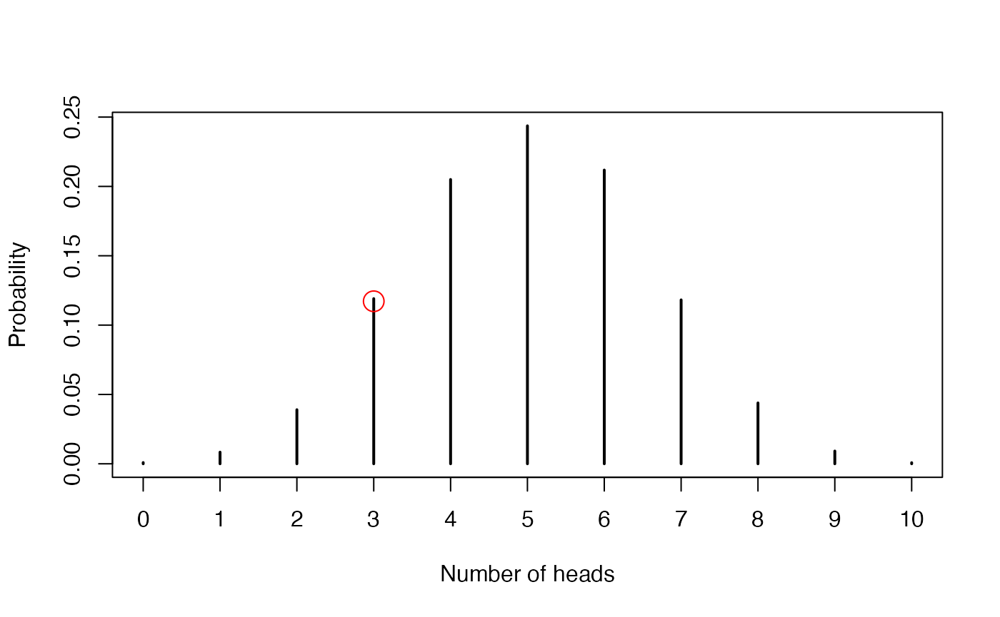
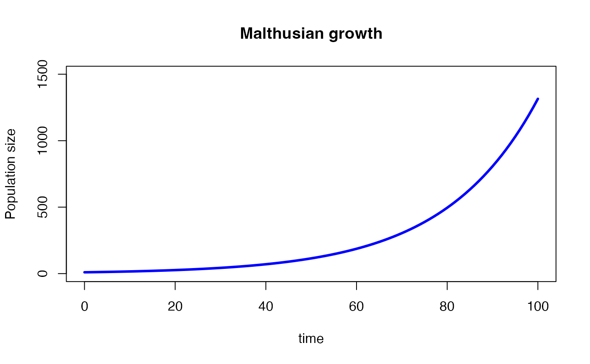

Introduction to evolutionary genetics
Matheus Januario, Andressa Viol, and Daniel Rabosky
Jan 2024
Source:vignettes/popgen_intro.Rmd
popgen_intro.RmdLearning objectives
- Simple math notation
- Probability of independent events
- Random number generators and density/mass probability functions
- Malthusian growth
- Mendelian genetics and Hardy-Weinberg Equilibrium at a single locus
- Heterozygosity
- HWE, deleterious alleles, and mutation
- Mendelian genetics at multiple loci
- Describing genetic variation in DNA segments
First, we load our packages:
Introduction
Since you are now familiar with R, we can proceed to our first lab in evolutionary processes. Today, we will focus on the fundamental entity of evolution: genes. We will first review how the laws of probability can be used to build very simple (but powerful!) models of genotypic evolutionary change. Then we will calculate some properties of and test hypotheses about such change. We will finish the lab by introducing methods to measure the genetic diversity generated by such processes.
It is important to note that we will change conventions quickly in this tutorial, meaning that the same letter might have different meanings in different equations, so be mindful of which section you are in.
Simple math notation
The first notation we will introduce is the summation, denoted by the uppercase Greek letter sigma (). Usually, the subscript of this letter tells you from which element to start the operation, and the upperscript tells you at which element the summation ends. For instance the notation:
indicates a summation of elements starting at the first (i = 1) and
going until the n-th element (the upperscript). It is left implicit in
this notation that the summation is made element by element, but
sometimes this information might appear explicitly. If you are familiar
with R’s for loops, it may be useful to think of the
summation as representing a for loop that iterates from the
sub- to the upperscript, each time applying the operation and adding its
result to the running sum.
A familiar example is the formula to calculate the arithmetic mean:
As another example, take the following equation, which describes the expected number of heterozygotes in a diploid population with alleles in Hardy-Weinberg equilibrium:
where is the number of alleles, and and are the frequencies of the th and th alleles. Note that on the right side of the equality, we sum the product of all allele frequencies. The inequality tells you to not apply the summation when . This kind of explicit information may appear in a summation.
So, in the case of , we would have the following equation:
Just for the sake of completion, one could also say that:
There is an equivalent of the summation for multiplication, and it is symbolized by the uppercase Greek letter pi (). So, the probability of independent events , each having the same probability is:
With representing each event. Note that the upper- and subscript are read in the same way as in the summation.
Probability of independent events
The joint probability of independent events is the multiplication of each respective probability (a quick video recap on that here).
So, the probability of seeing “snake eyes” (i.e. two “ones”) when you throw two dice is:
The notation in the middle equality above might seem overly complicated when compared to the left side of the equality, but the compactness of this notation becomes clear when we want to multiply many elements. R has functions that allow you to “throw dice” and study the probability of events. These are the functions that generate random numbers from probability functions.
Random number generators and density/mass probability functions
Using functions that generate random numbers, we can simulate much more than just coins and dice. R has functions that generate random draws from famous probability distributions.
To explore this concept, we will focus on one of these famous distributions: the binomial distribution. The binomial distribution applies for samples of events that have a binomial outcome, such as coin flips which result in either a “heads” or “tails” outcome. In the jargon of the field, we call one of these outcomes a “success” and the other one a “failure”; this makes more sense in the coin flip analogy if we imagine that we are using the coin to determine the result of some outcome, and one of the sides has the more favorable outcome (e.g. eat a piece of chocolate only when the coin lands on heads, no chocolate on tails).
The binomial distribution has two major properties:
- it counts the number of “successes” resulting from a sample of binomial events
- the probability of success is the same between events
The binomial distribution is therefore a distribution of integers that each represent how many successes there were within a sample of binomial events. The distribution is made by taking many repeated such samples. Each time we generate a random number from a binomial distribution, we are generating an integer between 0 (no successes occurred) and the total number of coin flips (only successes occurred). In the coin tossing example, is equivalent to counting heads out of coin tosses.
Like all probability functions, the binomial distribution has certain parameters. These are: , the probability of success for a single binary event, and , the total number of binary events. In the coin flip example, would be 0.5, representing a 50% chance of getting heads. would be however many times we flip the coin.
Let’s simulate a coin flip. Recall that the binomial distribution outputs the number of successes from a sample of events, so this is what each generated random number represents.
# Define how many samples we want:
rr <- 10000We use the rbinom function to randomly generate numbers
from the binomial distribution. rbinom is in the r-family
of functions, the collection of functions that randomly generate numbers
from probability distributions.
binom_nbrs <- rbinom(n = rr, size = 10, prob = 0.5) # taking 10000 samples of 10A potential point of confusion is that, in rbinom, the
argument size represents the parameter
discussed above, while the argument n actually represents
the total number of times we repeated sampling. The argument
prob represents the parameter
discussed above, the probability of success – much more straightforward.
The line of code above represents flipping a coin (with a 50% chance of
heads) 10 times and counting the number of heads flipped a total of
rr times.
If we check what the object binom_nbrs contains, we will
see…
head(binom_nbrs, 10)## [1] 3 7 5 3 1 5 5 4 6 6… a bunch of integers between 0 and 10. Each of these integers represents the number of heads flipped in a sample of 10 coin tosses.
As the binomial is a discrete probability function, it is meaningful to tabulate the frequencies of each number we got from the random draw we just made:
table(binom_nbrs)## binom_nbrs
## 0 1 2 3 4 5 6 7 8 9 10
## 9 84 390 1191 2050 2437 2118 1182 439 92 8We can also plot what we did very easily.
Above are the random numbers we generated – i.e., the stochastic realizations of the process that follows the distribution we chose. Each number represents the summation of the number of successes per sample. But what if instead of having a stochastic realization of the binomial process, we wanted to know what is the fixed probability associated with each specific number of successes?
For this, we would use the d-family of functions! These calculate the probability density associated with an event. An event in this case is a number of successes. For instance, to directly calculate the probability of observing, say, 3 heads out of a sample of 10 coin tosses, we would write:
P_x3_s10_p0.5 <- dbinom(x = 3, size = 10, prob = 0.5)
# x is the integer value we want to know the probability density of
P_x3_s10_p0.5## [1] 0.1171875This function basically just applies the probability mass function of the binomial distribution, which is
with:
Knowing that dinom is simply using the function written
above, you could manually calculate the expected probability density for
,
and check to make sure it is the same as what dbinom gives
you. To do that, use equation (6) and substitute
with 10 and
with 3 – you should get exactly the same number as the output of
dbinom, which is 0.1171875.
There is a difference here between the stochastic realization of a
process, acquired with rbinom, and the theoretically
expected outcome of a process, acquired with dbinom. If we
draw many random numbers, we should be able to approximate the expected
probability by calculating the proportion of each outcome.
# comparing the stochastic realization of x = 3 with the expectation for x = 3
table(binom_nbrs)[4] / rr #why the division?## 3
## 0.1191
P_x3_s10_p0.5## [1] 0.1171875What do you think? Is it a good approximation? How could we improve it?
We can also plot the random draws we made:
plot(
table(binom_nbrs)/rr,
ylab="Probability", xlab="Number of heads")
# Finally, we can mark the probability we are interested in
# by using a red dot in our plot:
points(x = 3, y = P_x3_s10_p0.5, col = "red", cex = 2)
Malthusian growth
The idea of geometric/exponential/Malthusian growth is of major importance for evolutionary biology. You have probably learnt of this concept before, but we will reiterate it here. Although often called “Malthusian growth”, the basic analytic approach was first developed by Euler and published in 1748. He modeled population growth with equation (7):
where is the growth rate of the population or the fractional increase per year, is the population size (in number of individuals), and is time.
Calculating and visualizing exponential growth in R
Instead of relying on a function to determine population size in the future, we can simulate population growth across time.
First we decide on an initial value for our population size. This is the number of hermaphrodite individuals, or the number of reproductive females in the population.
popsize <- 10Let’s also construct a vector to store time.
time <- 0We need to decide on a value for .
R <- 1.05We also have to decide for how far in time our projections of population size will go.
tmax <- 100 # this is the number of generationsLet’s also create a vector that stores the generations we will simulate through.
all_generations <- seq(from = 1, to = tmax, by = 1)Now we will construct what in programming is called a loop. This is just a series of very similar steps repeated. It is like running the same chunk of code again and again, but with small changes in inputs or parameter values (an explanation can be found here). We create a loop as below.
# For each generation, beginning in the generation = 1 and:
for(generation in all_generations){
N_t <- popsize[length(popsize)] # by indexing
# the vector in this way (i.e. using "[length()]"),
# we guarantee we are always taking the last value of
# this vector.
N_t_plus_one <- N_t * R # this is the application of Euler's formula
#Now, let's store the population size at that generation:
popsize <- c(popsize, N_t_plus_one)
#let's not forget to record the time that we are on:
time <- c(time, generation)
}Notice that the way our loop works is completely dependent on the way
we set up all objects (i.e., popsize,
time, R, tmax, and so on) before.
If you change the loop or change how these objects are
structured/organized, your code may return an error message (or not give
you the right result). It is safe though to change the numeric values
in those objects to explore how exponential growth behaves at
different values.
Now, we will visualize the results of the simulation we just did.
Let’s first create an empty plot, which includes providing the numerical range of the x and y axes of the plot. Then, we will add a line describing the size of the population over time.
#
plot(NA, xlim=c(0,tmax), ylim=c(0,1500),
xlab="time", ylab="Population size",
main="Malthusian growth")
lines(x = time, y = popsize, col = "blue", lwd = 3)
Try to change the numbers inside the arguments xlim and
ylim. How does this change the plot?
Now, make a plot of exponential growth in four populations: one where
,
one where
,
one where
,
and one where
,
where x is a number of your choice that must be greater than 1. Color
the populations using increasing darker shades of your chosen color.
(Names of colors in R can be found here).
Choose x and y limits (arguments xlim and
ylim, respectively, in the plot() function)
that you think best describes qualitatively the difference(s) between
the 4 lines.
Repeat the same plot as above, but this time plot the y axis on a log scale.
Mendelian genetics and Hardy-Weinberg Equilibrium (HWE) at a single locus
We will now use simulations to test if the observed set of genotype counts is consistent with what we would see if we sampled genotypes at random. We will first create a null pattern using R functions, then we will contrast this pattern with the observed genotype frequencies and compare them to expectations under Hardy-Weinberg equilibrium (hereafter, HWE, Hardy, 1908; Weinberg, 1908). For a historical perspective on HWE, we recommend reading Mayo (2008).
For the purposes of this lab, we will look to a bear population in Canada.
Kermode bear from British Columbia
Hedrick & Ritland (2012) studied a population of Ursus americanus where a “single nucleotide change from G to A, resulting in the replacement of Tyr to Cys at codon 298 in the melanocortin 1 receptor gene (mc1r)” created a whole new phenotype related to color: the “Spirit bear” variety (see figure 1, from Hedrick & Ritland (2012)).

In a previous study (Ritland et al, 2001), the following frequencies of genotypes were observed: 42 individuals with the dominant homozygote phenotype, 24 heterozygotes, and 21 recessive genotypes. Hedrick & Ritland (2012) asks: are the Spirit bear frequencies a result of neutral processes? This is equivalent of asking is this genotype frequency a simple reflex of Hardy-Weinberg Equilibrium (HWE)?
Calculating allele frequencies from genotypes
Let’s start our investigation with a simpler question: what is the allele frequency of this population? To have an idea, we would need to count each allele’s relative frequency in the population genetic pool.
Let’s consider (the dominant allele): first we would need to count the number of alleles by finding out (a) how many copies of that allele each genotype carries, and then (b) multiplying that by the number of individuals with each relevant genotype. So, applying this to the data on the Spirit bear:
We sum all these terms and divide this sum by the total number of alleles in the population to get the allele frequency. As this gene has only two alleles, we get:
So:
A statistical approach to test for HWE and a given allele frequency
Using the allele frequencies we calculated above, we can use statistics to answer the question posed by Hedrick & Ritland (2012).
To do this, we will do a test that resembles a chi-square test. The first step is to decide upon a test statistic – i.e., some measure we care about. For instance, we could pick the sum of the squared difference between each observed genotype frequency and the HWE expected frequency:
where is the observed number of individuals and is the expected number of individuals. This calculation is performed for each genotype ( is the total number of genotypes).
Considering all HWE assumptions, we should expect the frequencies to be for one homozygote, for the second homozygote, and for the heterozygotes. As , and , our statistic is calculated as:
Note that the value above uses the rounded allele frequencies for simplicity. However, if you calculate such frequencies using R, the calculation will be very precise and the lack of rounding will change the number of .
Once we calculate this value, we need to know: is the value of our statistic big enough to reject HWE? We do not know yet.
To proceed, we have to create a null distribution of our statistic of interest (). To construct the null distribution, we just have to know what would be the distribution of our statistic of interest if all assumptions of HWE are met. We will meet these assumptions in our simulations. Note that this is basically the construction of a virtual Wright-Fisher population (more details on this in future lectures).
To make it easier to simulate data, we will use the built-in
simulations from evolved, the function
OneGenHWSim. It takes three arguments:
n.ind: the number of individuals in the population
n.sim: the number of simulations you want to do
p: the allele frequency of one of the two alleles
So, if we want to study HWE frequencies (in a Wright-Fisher) using 5 simulated populations of 100 individuals each, all having an allele frequency , we would write:
sim_pops <- OneGenHWSim(n.ind = 100, n.sim = 5, p = 0.467)
#now, checking the result of our simulations:
sim_pops## A1A1 A1A2 A2A2
## sim_1 22 49 29
## sim_2 21 51 28
## sim_3 23 48 29
## sim_4 20 54 26
## sim_5 26 41 33What the result above shows is a table with the number of individuals with each genotype at the end of the simulations. We can use this to calculate our statistic of interest. The following steps will walk you through this process.
Do many simulations of populations that have the same number of individuals and allele frequencies as the Kermode bear population studied by Hedrick & Ritland (2012).
Calculate for every single one of your many populations. A good tip here is to remember that R is a vector calculator, so you can apply the same operation to all elements of a column in a data frame. If you don’t remember how R does vectorized calculations, you can check the Lab_00.pdf file, or see below:
# To remember how this works, let's imagine you want to
# arbitrarily calculate (f(A1) + 3) / 4.5 for all your simulations.
#You should run:
freqs_A1 <- sim_pops$A1A1 / (sim_pops$A1A1 + sim_pops$A1A2 + sim_pops$A2A2)
result <- (freqs_A1 + 3) / 4.5
result## [1] 0.7155556 0.7133333 0.7177778 0.7111111 0.7244444
# the above has no biological "meaning".
# it is just to remind you how vectorized calculation worksVisualize what we did. To do this, first use the function
hist()to plot the histogram of the set of values that came from our simulations. This represents the distribution of the likely values of if the population is following HW assumptions, adjusted to the particularities (i.e., the “parameters”) of the empirical population. Where would the empirical (observed) value of be on the x axis?Measure quantitatively the likelihood of our empirical value of being generated by pure chance. This is equivalent of asking: what is the probability of, by pure chance alone, observing the empirical value of our statistic (or a value even more extreme than that)?
Can you think of some very simple code that quantifies the proportion of simulations that have an value equal or larger than the empirical value? Maybe one that uses a logical test?
- The proportion of
values that are equal to or more extreme than your empirical value can
be interpreted as a “pseudo p-value”. This is a one-tailed test. The
“p-value” is called “pseudo” because we do not have a formal probability
distribution here, just an approximated distribution of
values created by simulating data. Still, if the “pseudo p-value” is
smaller than 0.05, we usually feel confident in rejecting the null
hypothesis that the data came from a distribution analogous to the one
we simulated. Note also that because your p-value depends on the number
of simulations you did, the number of decimals you will have in your
p-value calculation will be proportional to the number of simulations
you did (i.e., you have a precision equal to 1/
n.sim)
- Use the function
ablineto mark relevant values in your histogram using vertical (argumentv) or horizontal (argumenth) lines. Hint: make sure the line you plot is inside the values of your axes! To manually change your axes, use the argumentxlim = c(A,B), whereAis the left limit of your x axis, andBis the right limit of your x axis.
Now, use the procedure above to answer question number five:
The first challenge of this lab is recommended for students that feel confident with their R skills:
Heterozygosity
As defined in the lecture, “heterozygosity” might mean two things:
- the probability that 2 alleles sampled from a population are different.
- The actual frequency of heterozygotes in the population.
Describing genetic variation in DNA segments
As you saw in the lecture, some of the most remarkable first studies of genetic variation are Hubby & Lewontin (1966) and Lewontin & Hubby (1966). To deepen your perspective on these studies and their historical and current applications, we recommend reading Charlesworth et al (2016).
Genetic diversity has had an important role in the study of biological diversity. For the purposes of this class, we will take an extremely simplifying approach and calculate different, but simple statistics of “genetic diversity”.
Consider the following aligned DNA sequences from 3 genes (genes separated by space):
Individual 1 ACCGTA AAAAAT CTTATA
Individual 2 AGCGGA CATAAT CTTATA
Individual 3 ACCGTA AAAAAT CTACTA
Individual 4 ACCGGA AAAAAT CTACTA References:
Charlesworth, B., Charlesworth, D., Coyne, J. A., & Langley, C. H. (2016). Hubby and Lewontin on protein variation in natural populations: when molecular genetics came to the rescue of population genetics. Genetics, 203(4), 1497-1503.
Hardy, G. H. (1908). Mendelian proportions in a mixed population. Science, 28, 49–50.
Hedrick, P. W., & Ritland, K. (2012). Population genetics of the white‐phased “Spirit” black bear of British Columbia. Evolution: International Journal of Organic Evolution, 66(2), 305-313.
Hubby, J. L., & Lewontin, R. C. (1966). A molecular approach to the study of genic heterozygosity in natural populations. I. The number of alleles at different loci in Drosophila pseudoobscura. Genetics, 54(2), 577.
Lewontin, R. C., & Hubby, J. L. (1966). A molecular approach to the study of genic heterozygosity in natural populations. II. Amount of variation and degree of heterozygosity in natural populations of Drosophila pseudoobscura. Genetics, 54(2), 595.
Mayo, O. (2008). A century of Hardy–Weinberg equilibrium. Twin Research and Human Genetics, 11(3), 249-256.
Ritland, K., C. Newton, and H. D. Marshall. 2001. Inheritance and population structure of the white-phased “Kermode” black bear. Curr. Biol. 11:1468–1472.
Weinberg, W. (1908). Uber den Nachweis der Vererbung beim Menschen. Jahreshefte des Vereins fur vaterlandische Naturkunde in Wurttemberg, Stuttgart 64:369–382. [On the demonstration of inheritance in humans]. Translation by R. A. Jameson printed in D. L. Jameson (Ed.), (1977). Benchmark papers in genetics, Volume 8: Evolutionary genetics (pp. 115–125). Stroudsburg, PA: Dowden, Hutchinson & Ross.